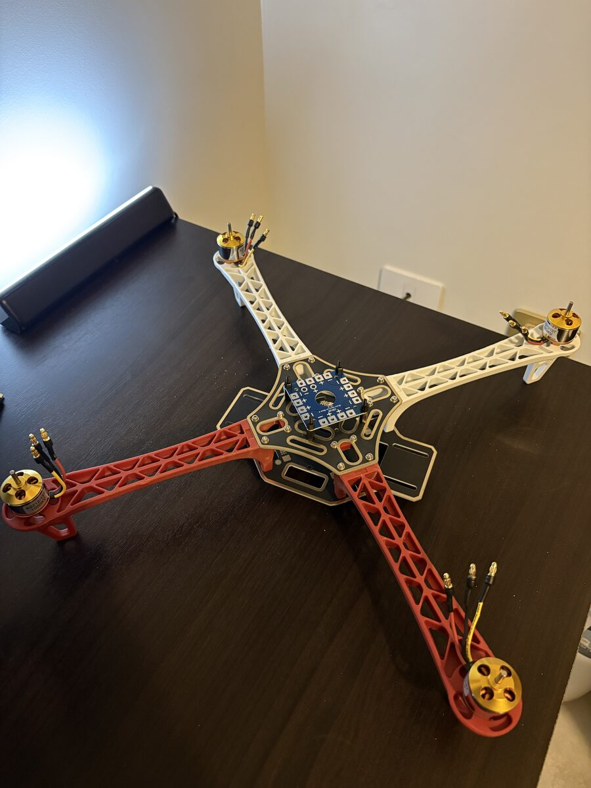
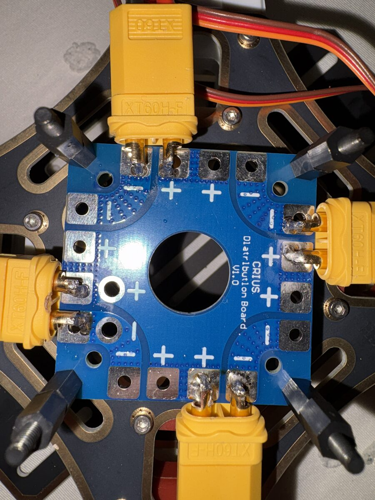
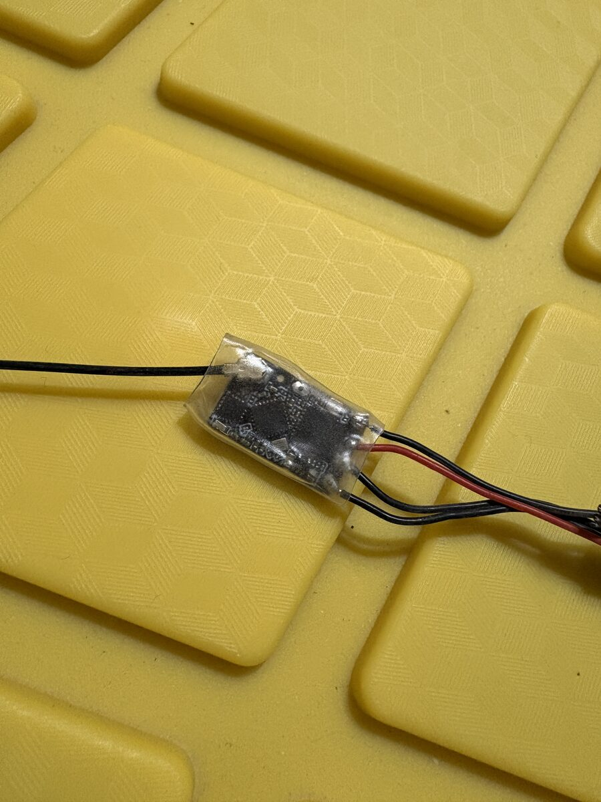
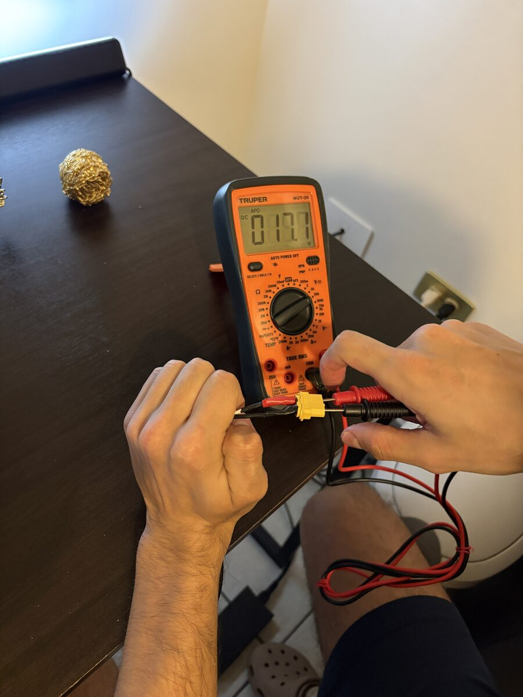
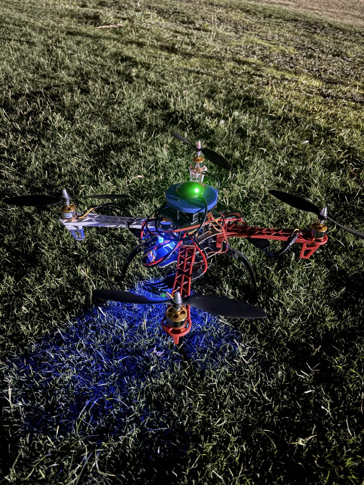
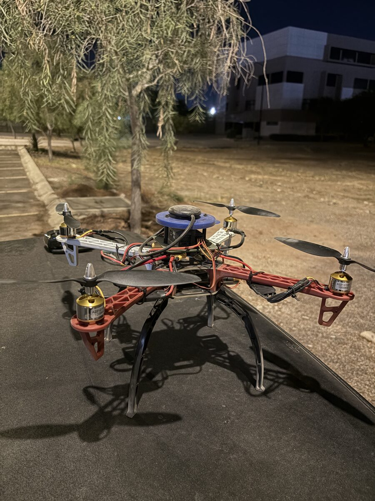

I once had the idea of getting into drones, so I tried to build my own. I searched for some inspo on YouTube and this video helped go through the initial steps on what to buy and what to expect from the process. I aimed to buy the most similar parts to what he mentions. The flight controller was perhaps the most important piece that differs from the video, as with the receiver, the GPS module, the batteries and their charger.
Reading Note: This project was assembled before I could decide on my notes system so this is the only page with a chronological sequence from top to bottom (and not vice versa).
Build Notes
Frame and motors
Assembling the frame was straightforward. The motors however, ended up being a bit of a hassle. I assembled all 4 motors and they were working as the servo tester proved. Up until connecting the drone to my laptop I realized there was a failure in one of the ESCs that I could not prove to be around any of the connections with the flight controller or the motors themselves. So I stripped the remaining 2 ESCs off their wires, completed the connection with some spare wire I had, and manually soldered them to the controller - to this day, my only theory suggests a faulty wire coming from one of the ends of both controllers.

I soldered the connection from the ESCs to the board of the frame and stripped the middle wire coming from their LEDs since my controller is a Pixhawk and only accepts 2 ends. You can see where this takes me: my controller accepts 2 wires coming in my ESC LED but I need those 3 to test if the connection even works.

Flight controller
Assembling the Pixhawk 6c Mini Flight Controller worked out. I had to do some research around to know where the components were supposed to be connected but in the end, managed to get the 4 motors to work on it, after the problems with the ESC signal wires.
Receiver
I soldered around my ELRS receiver after some research indicated me the order of the wires the flight controller needed and turned out to be a precise soldering work I did after practicing for a bit.

Batteries
After getting my batteries, I also needed to manufacture a charger for the battery charger. I hacked around a Dell charger to make it work with my ISDT Retro charger. I couldn't find the video which guided me through the process but it ended up being simple: you can just cut off the end of any basic Dell charger that plugs to your pc, cut the blue cable, and connect the other two to a XT60 end that will then plug to your battery charger; make sure to check the polarity before soldering to the connector and the voltage after to see if everything still works.

Please watch some documentation or see tutorials on how to store, and manage LiPo batteries.
Other modules
Connecting both the compass and the GPS module to the Pixhawk comes in very easy as they are designed to be compatible. You will need to make sure to "design" some sort of a stand for your GPS module and take some time to really organize how you will handle cable management along the drone.
On software...
I researched about flight software and Clauded for a while until I opted to make it work in QGroundControl. I will praise their interface but not the lack of videos around complete setup guides. You can translate most of the setup from ArduPilot and Claude is also up to date with what are the recommendations for setting up a project in it. Once again, my setup was mostly slow because of the problems between my ESCs and the Pixhawk. So I would go to do some test flights or prepare everything for making the propellers spin and the motors wouldn't spin for no apparent reason.
Flying
My drone ended up looking like this and flying as it is supposed to do. Although I will confess my flying skills are considerably lower than my fear of crashing $600 USD (I had no hardware or electronics equipment before this project) with not sufficient repairs if it ends up in the ground in less than a minute. So I have been conservative with the flight tests for now.


Takeaways
As a general takeaway, I can assure waiting for electronics and overall parts is the biggest bottleneck of the process. If you are planning to build something like this, consider buying everything at once to avoid delays, and plan what you will do while you wait.
I do plan to return to this project since I want to add some autonomy to it. I am currently focused on making my robotics base stronger in the meantime but I will confess it is a rewarding experience to see it flying - and almost crashing due to my evident flying skill issue.
P.S. This was an oversimplification of the whole journey but detailed, daily logs will come in future projects.